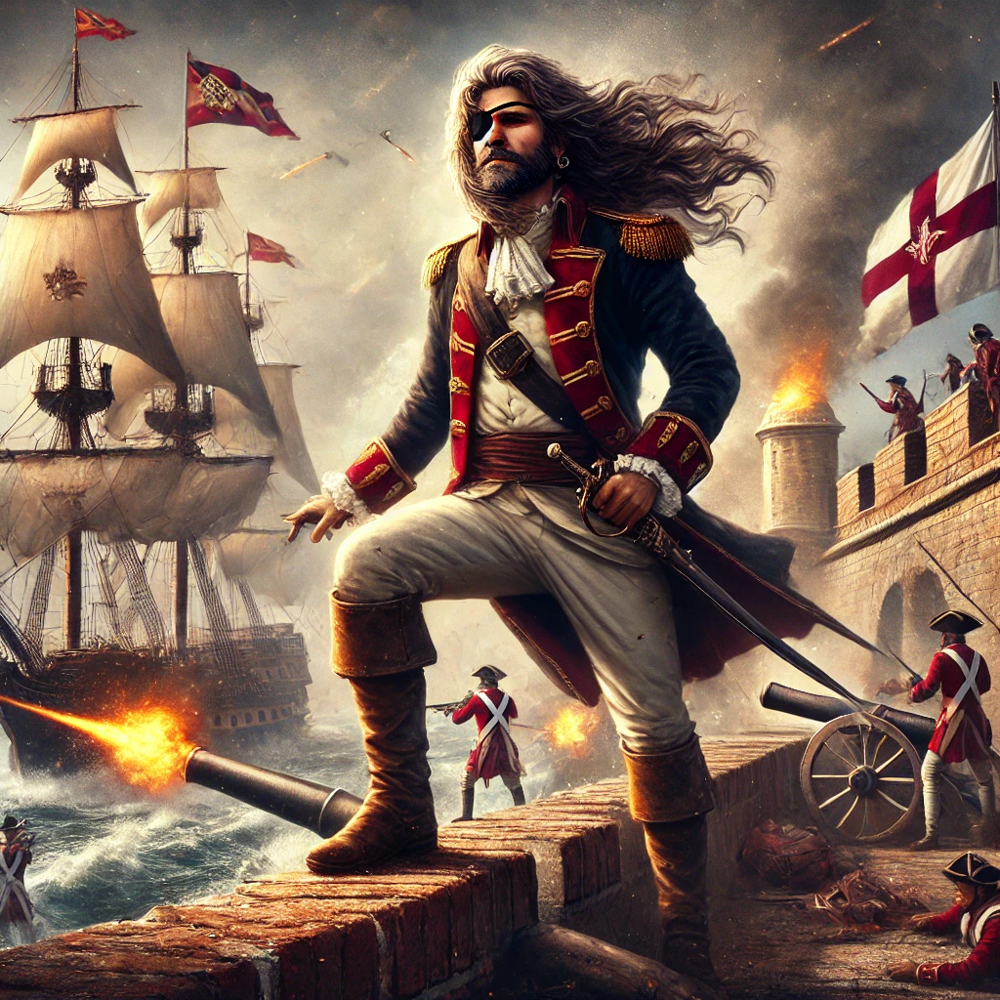
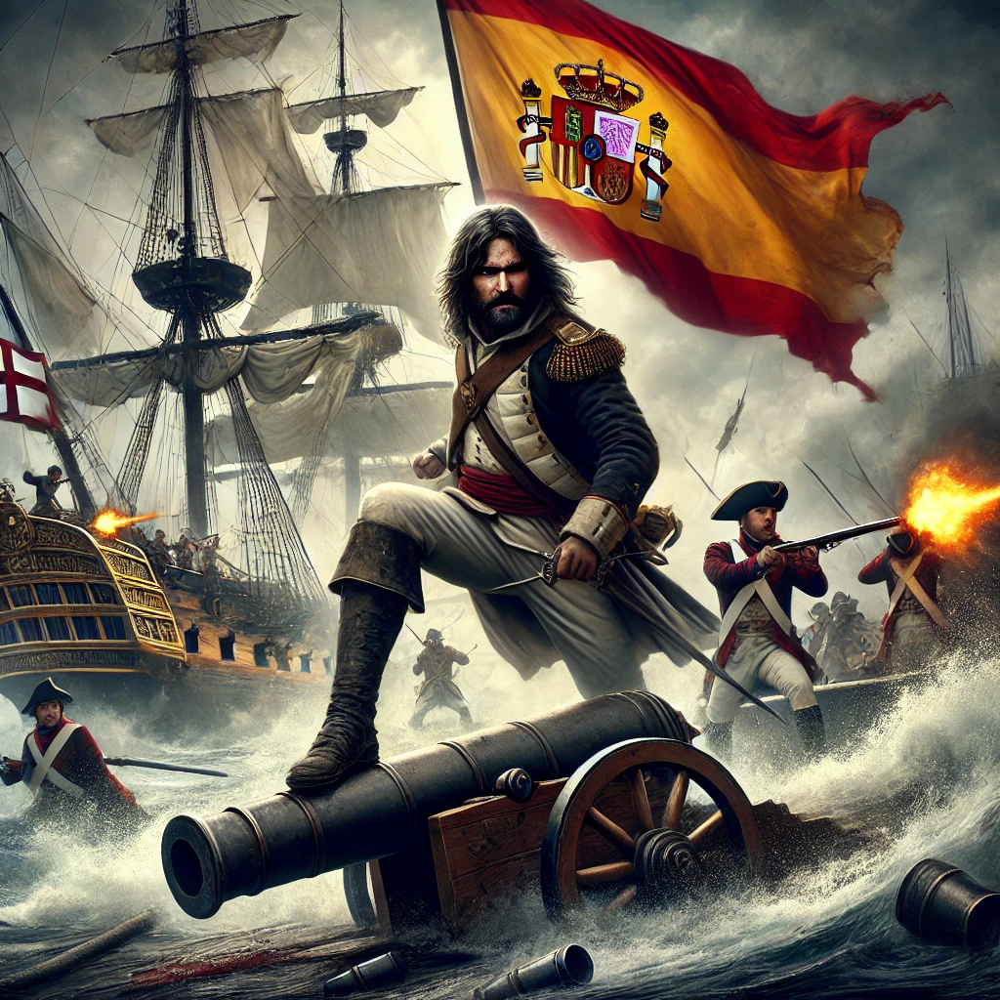
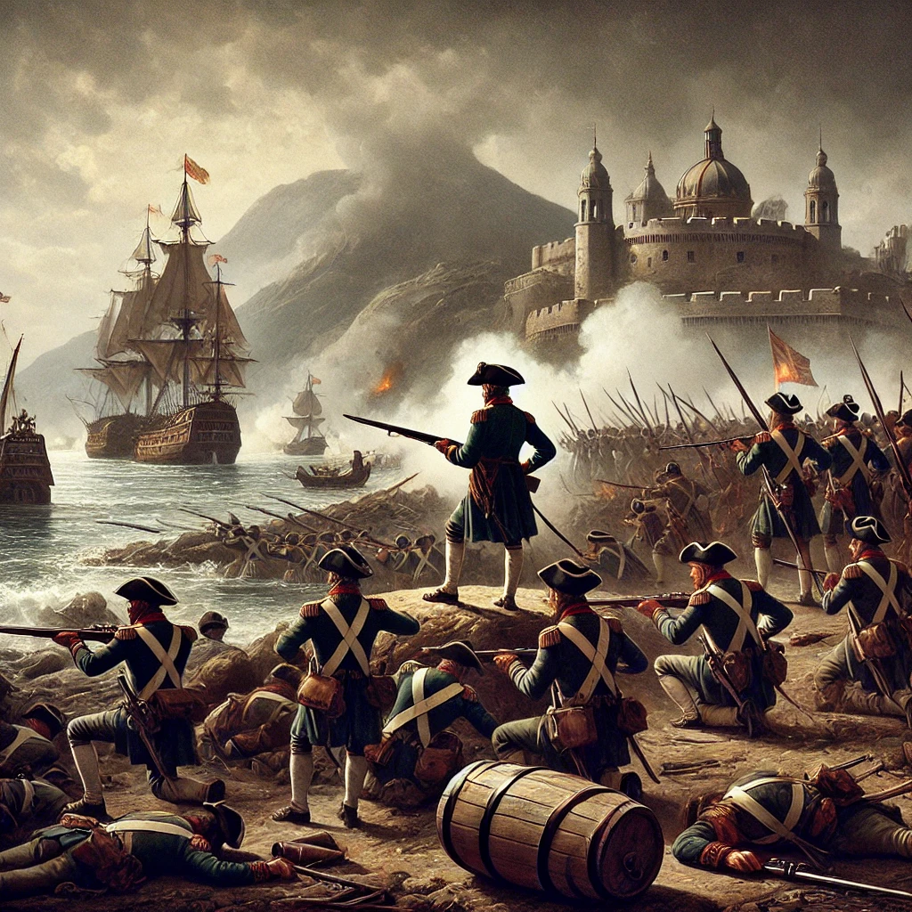
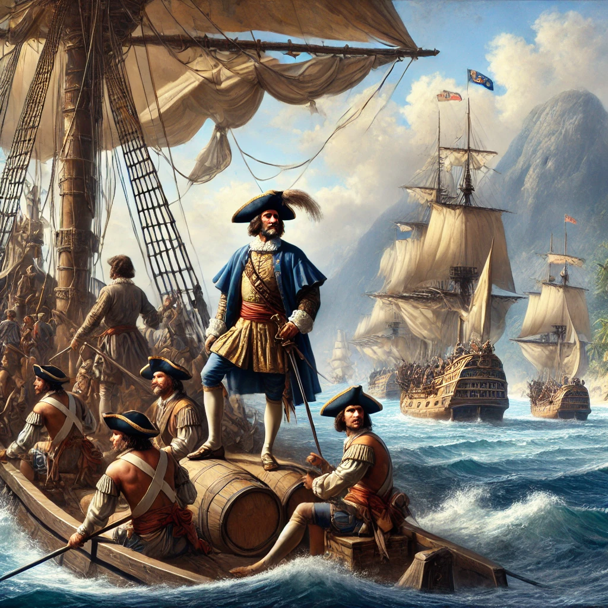
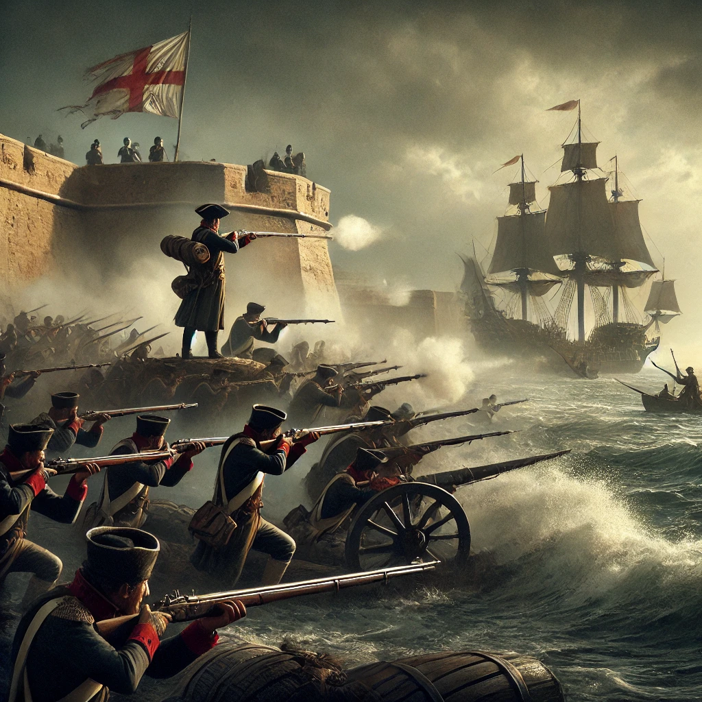

Proyectos de Blas
Video
Mis Proyectos

Defensa de Cartagena de Indias (1741)

Batalla de Vélez-Málaga (1704)

Defensa de Tolón (1707)
Bloqueo de Barcelona (1713-1714)

Expediciones en el Pacífico (1716-1723)

Defensa de Cádiz (1726)